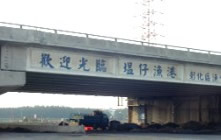
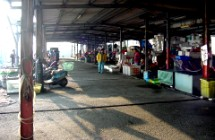
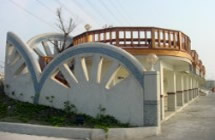
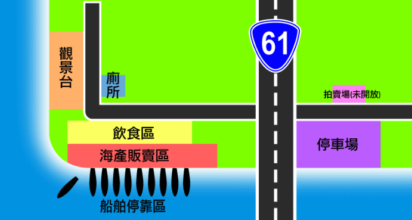

從西濱快速道路沿著道路指標進入線西海濱，一下西濱快速道路就可看到陸橋上斗大的「歡迎光臨 塭仔漁港」之字樣。往右是拍賣魚市、海產店及膠筏停靠處；往左則有專用停車場和魚貨批發大樓。 塭仔港是漁民出入討海的碼頭，碼頭處可見一艘艘漁船、膠筏停靠，這些當地漁民賴以維生的生活工具，在未出海時即用纜繩緊緊繫在岸邊，而到出海捕魚時，便可看見漁民準備齊全，滿心期待的出海。每到漁船返港漁貨滿載而歸時，魚市場就開始熱鬧起來，一攤攤排列整齊的魚攤販，擺列著各式各樣剛捕捉上岸的新鮮漁貨，有攤販的熱情叫賣聲，有遊客、饕客的讚美聲，而附近海產店的代客烹煮，更讓民眾可以立即品嘗海鮮。假日時，馬路兩旁更是擠滿了攤販及挑選漁貨的遊客。 旁邊的觀景台，是為了將塭仔港轉型開發為觀光漁港而剛新建完成，站在木質的庭台上，伴著徐徐微風，眺望晚歸漁船點點，燈火處，漁夫歸，充滿了無限詩情畫意…。



